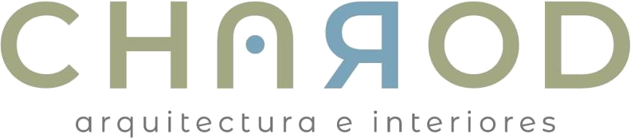

Charod es un estudio de interiorismo. Trabajamos cada casa, oficina o local desde el plano hasta el último detalle de terminación, sin perder de vista cómo se va a habitar.
En Charod diseñamos interiores partiendo de un mismo eje: el plano que ordena el espacio, y la vida cotidiana que ese espacio va a sostener.
Trabajamos la luz, el material y el mobiliario con la misma atención que ponemos en cómo se sienta una familia a comer o dónde cae el sol sobre un escritorio a las cuatro de la tarde.
Cada encargo empieza escuchando cómo se quiere vivir, y termina en un espacio que no necesita explicarse: se entiende al habitarlo.
Dos formas de trabajar juntos: algunos proyectos los acompañamos solo en el diseño; en otros, además, llevamos adelante el desarrollo y la ejecución completa en obra.
Rediseño integral del interior de una vivienda existente, organizado en torno a un eje que conecta el estar, el estudio y el jardín en una sola línea de vista.
Renovación integral de un piso de los años 40: se conservó la carpintería original y se rediseñó la circulación completa.
Un espacio de trabajo pensado como sucesión de ambientes domésticos, sin perder la eficiencia de una oficina.
Relevamos el terreno, el presupuesto y, sobre todo, cómo quiere vivir cada cliente.
El plano, los materiales y el mobiliario se piensan juntos desde el primer boceto.
Documentación técnica, materialidad y mobiliario definidos con el mismo nivel de detalle.
Seguimos la obra en sitio hasta la última terminación interior — solo en los proyectos de Diseño + Desarrollo.